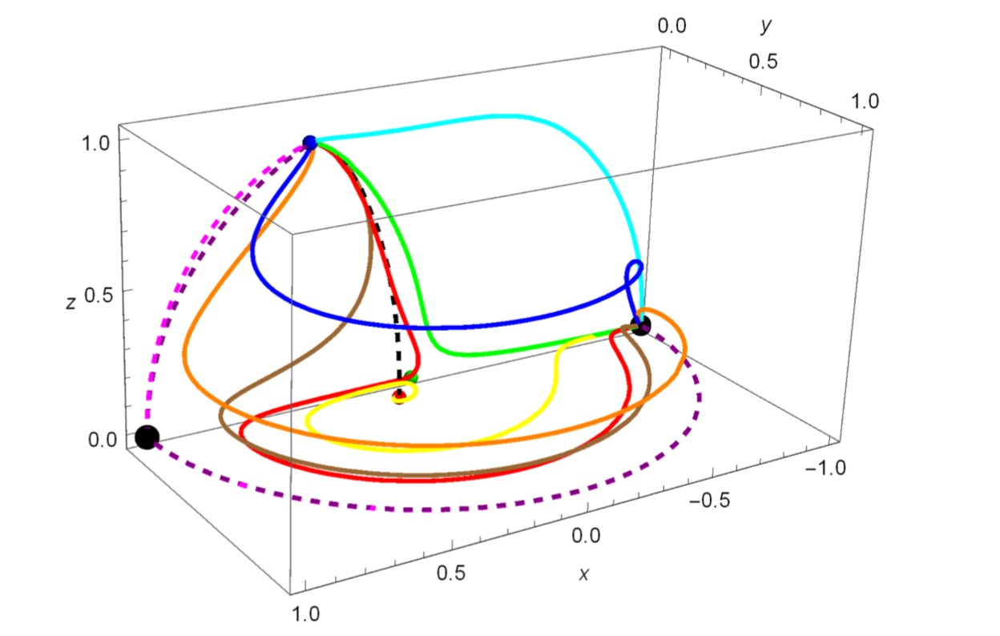
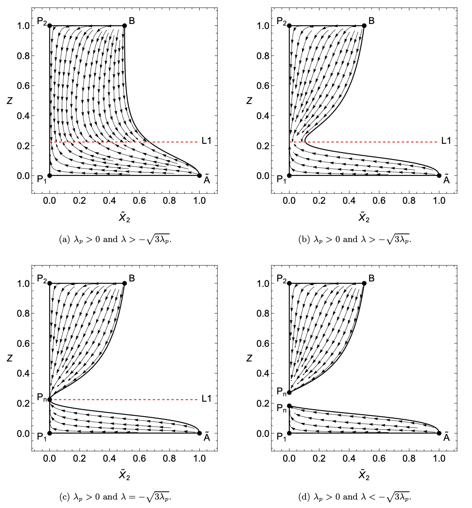

Inflation from torsion in metric-affine gravity
In my recent work
Modified gravity: a unified approach to metric-affine models [2301.11051 gr-qc]
we study theories that break diffeomorphism invariance in metric-affine spaces. In a simple cosmological example, we show that torsion
can propagate even without sources, akin to gravitational waves in standard GR. The figure shows the effects
of torsion, where it acts to drive inflation at early times, but dies off at late times.

Dynamical systems in scalar field cosmology
A phase space plot in the context of scalar field cosmology. The different coloured paths
show trajectories with different initial conditions, whilst the different points represent fixed
points of the system. All trajectories end up at the global attractor corresponding to an accelerated exponential expansion.
This particular example is for a power-law potential model, from my work Scalar Fields in Cosmology: A Dynamical Systems Approach.

Geometric modifications of gravity
A figure taken from our paper
Modified gravity: a unified approach [2103.15906 gr-qc]
looking at generalising modified geometric theories of gravity
by focussing on the unique boundary terms relating each theory. The bottom two arrows of the figure
point to the popular modifications f(T) and f(Q) gravity, showing that they can be reconstructed from this more general setup. The
work also looks at the role of fundamental symmetries such as diffeomorphism invariance.

Cosmological dynamical systems in modified gravity
Evolution of cosmological parameters in second-order modified theories of gravity, taken from our paper
Cosmological dynamical systems in modified gravity [2201.09588
gr-qc]. The x-axis is the radiation density parameter, whilst the y-axis is proportional to the Hubble parameter.
By analysing the trajectories on the phase space, one can obtain a qualitative picture for the evolution of these physical
parameters. The different phase spaces are for different values of free parameters in a specific model, and the points Pn represent de-Sitter points (i.e. where
the universe undergoes accelerated expansion).